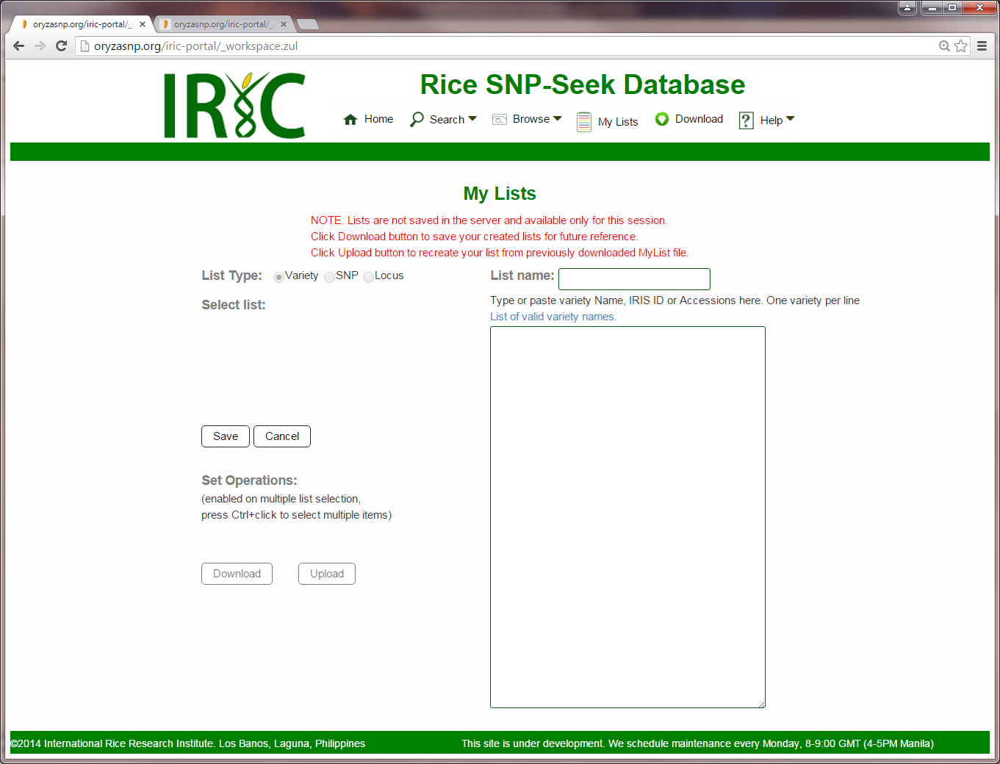

The My Lists page serves as the users workspace. It displays the lists that the user have created either from query results or by manual edit in this page.

To create a List:
- Choose what kind of list to create from List Type. Variety, SNP, and Locus list can be created.
- Click the Create button.
- Type in or paste the variety names, IRIS IDs, IRGC accessions, SNP or Locus IDs depending on the list that is being created. There should be one entry for every line. If several names or IDs or accessions refer to the same entity, only one is created.
- Click the Save button to save the list or the Cancel button to clear the list.
To delete a Variety List:
- Select the list name.
- Click the Delete button.
Once the List is created and saved, it can be downloaded by selecting the List created then clicking the Download button.
Created with the Personal Edition of HelpNDoc: Easy EPub and documentation editor